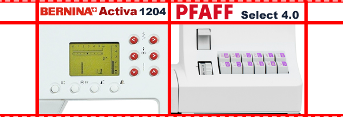
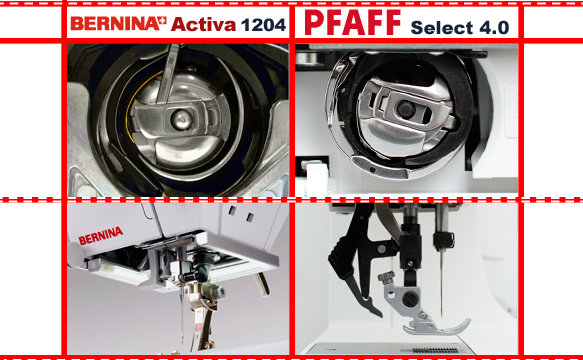

|
Доброе время суток, сегодня мы рассмотрим две машины Professional сегмента двух лидирующих европейских фирм, не нуждающихся в особом представлении, Pfaff и Bernina. Одни только названия брендов настраивают на 100% качество. Это Pfaff select 4.0 и Bernina Activa1204(240) и опишем их по отдельности. |
|
Bernina является компьютеризированной машиной, выполняющей 99 операций, в их числе трикотажные, пять видов петель(в том числе с глазком), краеобметочные, эластичные, потайные, декоративные, три вида алфавита и т.д. Актива обладает вертикальным челноком, что позволяет добиться более ровной строчки; ЖК-дисплеем; памятью на тридцать ячеек, облегчающей вам компоновать узоры и буквы в строчки и слова; CFL-лампой дневного света, которая не даст устать глазам пользователя; регулятором скорости на передней панели, что очень удобно для начинающих, для сшивания аппликаций и тд; функцией зеркального отображения одного фрагмента узора, которая позволяет воплотить в жизнь разнообразные отбортовки, отделки изделий декоративными строчками. Так же в комплекте вместе с 1204 вы получите семь лапок, рычаг коленоподъемника, функциональную шкатулку-шкаф для аксессуаров. Стоит отметить и гарантийный срок 3 года от производителя. |
|  |
|
Главное и принципиальнейшее отличие Пфаффа, это его класс. Pfaff - это электро-механическая машина, с вертикальным челноком двойного обегания, имеющая возможность выполнения 40 строчек, мало чем отличающихся от обычных электро-механических машин low класса, с дополнением нескольких декоративных строчек, правда вряд ли сравнимых по сложности с строчками компьютерных машин, да и петлю Select делает только одну прямоугольную. Швейная машина Pfaff обладает встроенным транспортером, который позволяет без труда делать качественную строчку на капризных материалах. Простота в управлении - это явный плюс Пфаффа, нажатие на клавиши расположенные на специальном отливе передней панели при шитье уносят вас в мир фантазий, и заставляют поверить в то, что вы маэстро, ведь они так напоминают раскладку пианино, да еще и помогают быстро перейти от одной операции к другой. К плюсам Селекта стоит отнести и увеличенные, по отношению к Бернине, длину и ширину строчки на 0,5мм и то, и другое, все те же 6 лапок, плюс встроенный транспортер. Петля выполняется в полуавтоматическом режиме, освещение происходит благодаря лампы накаливания- немного странные и редко встречающиеся решения, для машин такого класса. Общими положительными моментами, хотелось бы назвать великолепные профессиональные рейки-транспортеры и чувствительные педали. А вот минусы, если их можно туда отнести, это уникальность лапок как у Pfaff, так и у Bernina, что может затруднить их поиск в дальнейшем. |
|  |
|
Обе конкурсантки, прошивают любую толщину материала. Можно даже сказать, что они «шьют все, что помещается под лапку». И сама строчка оказывается ровной и крепкой, мы это проверили на 10 слоях джинсовой ткани и это явно был не предел. |
|
Этот тест немножко не корректен, по причине автоматической петли у Bernina и полуавтоматической у Пфаффа. Все сложные петли, таких как глазковая, являющийся одним из любимых тестов-сравнений, в этот раз отметается по причине не соответствия машин в функционале. Ну что ж, Пфафф в результате сделал петлю похожую на петлю Бернины, вот только такой плотности, как у Активы, Селекту не добиться, и все это тоже упирается в то, что существует большая разница в классе. |
|
Оба конкурсанта почти идеально (а если не придираться, то идеально) справляются с шифоном в два слоя. С одним отличаем, Bernina Activa не потребовались корректировки настройки натяжения нити, в то время, как у Pfaff пришлось покрутить регулятор в сторону уменьшения. |
Вывод: Остановившись на Pfaff select 4.0 и Bernina Activa1204(240) вы точно выбираете качество. Качество строчки у обеих машин схожи, а классы различны. Что выбрать решать вам. Но все, же хочется отметить, что в одной ценовой категории делается выбор между машинами разных классов. Если хочется получить функциональность и большее удобство, то я обратил бы взгляд в сторону 240 модели. Пользователи, искушенные классикой, и непререкаемой репутацией швейных машин PFAFF, найдут в швейной машине Pfaff Select 4.0 верного помощника в доме.
В данной статье мы провели сравнение швейных машинок Pfaff select 4.0 и Bernina Activa1204(240). Получить информацию о сравнении других швейных машин вы можете на странице «обзоры». Сайт регулярно обновляется и дополняется новыми обзорами, не пропустите!